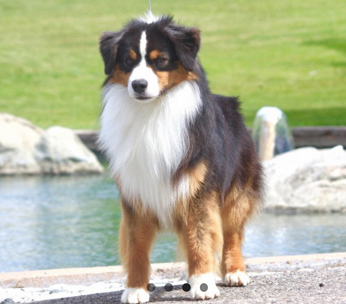
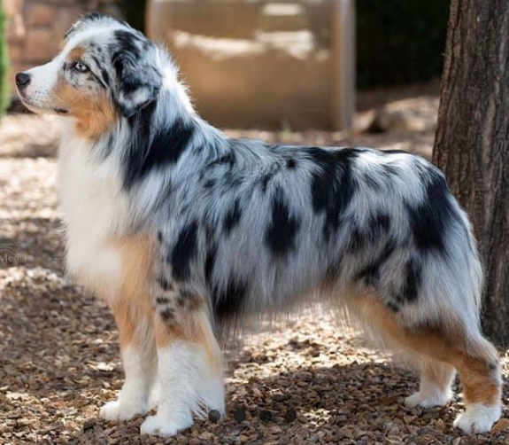
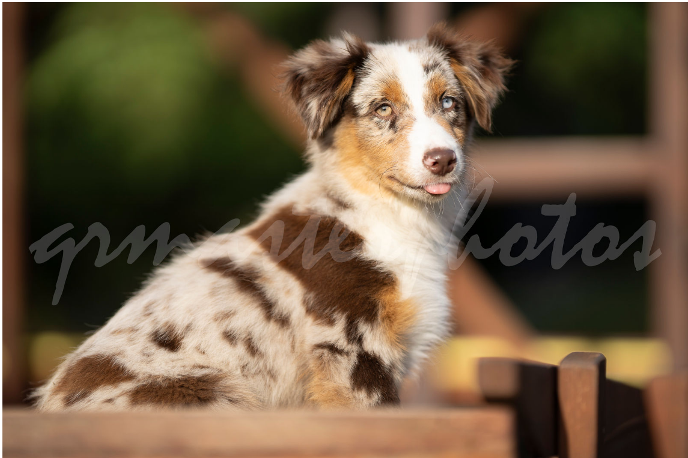
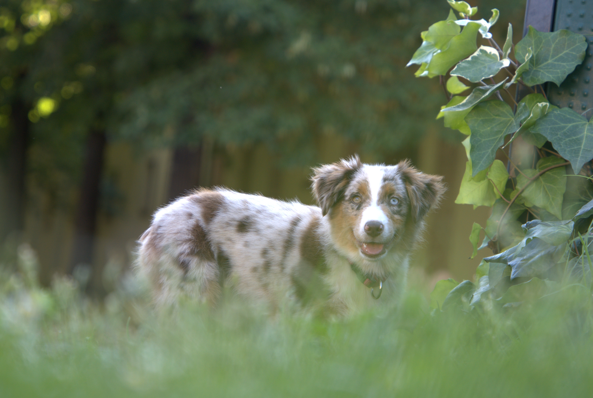
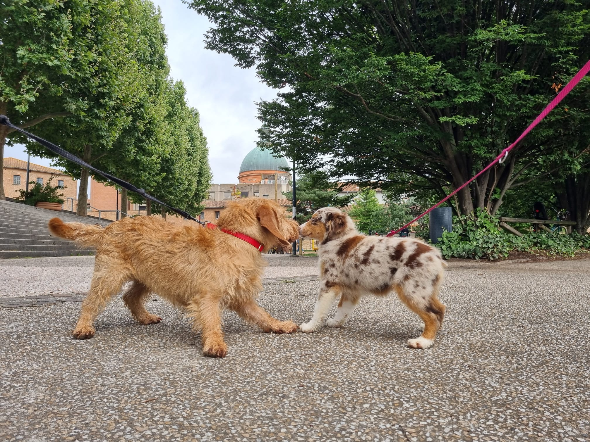
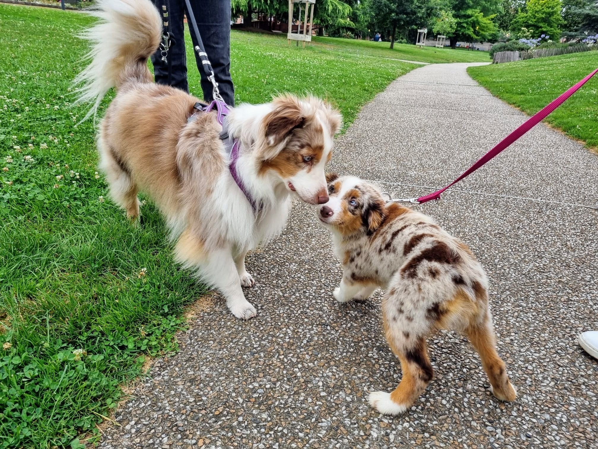

What Volta learned during the first week
The very first week at the new home is very important for dog. She learned lot of things:
- Where is her place at home
- What is her name
- Walk with the leash
- Walk without leash
- Come to me when I call her
- Using a teethbrush
- Make friends with other dogs
Volta's rase called Miniature American Chepperd.
According to the Wikipedia The Miniature American Shepherd, frequently abbreviated MAS, is a small herding dog breed.
The MAS is highly intelligent and biddable. The breed is often trained for dog sports such as herding, agility, obedience,
canine freestyle, flyball, and others.
The Miniature American Shepherd was recognised by the AKC in 2015 and is the club's 186th breed.
There are several options of the coat colour for MAS:
- Tri-colour
- Blue merle
- Red merle
- Red
The MAS dogs were bread down from their Australian
counterparts.
The two share similar physical and social characteristics.
Here are some pictures of this race. You could click on them to go
to the source web site of Kennel Club Beverly Hills.


I would like to share some pictures of Volta
Last week Volta had two photosessions. We wanted to capture the time until she's still a puppy.
Here are some pictures of her:


Who is Volta
She was born on 23/03/24 and her full name is actually Very Swetty Volta Du Domaine Du Clos Australien.
Yep, she's french. She seems to be very intelligent and playfull. Volta is a quite sochial puppy - she attempts
to say hello to every dog on her way. Just after she invites them to play.

